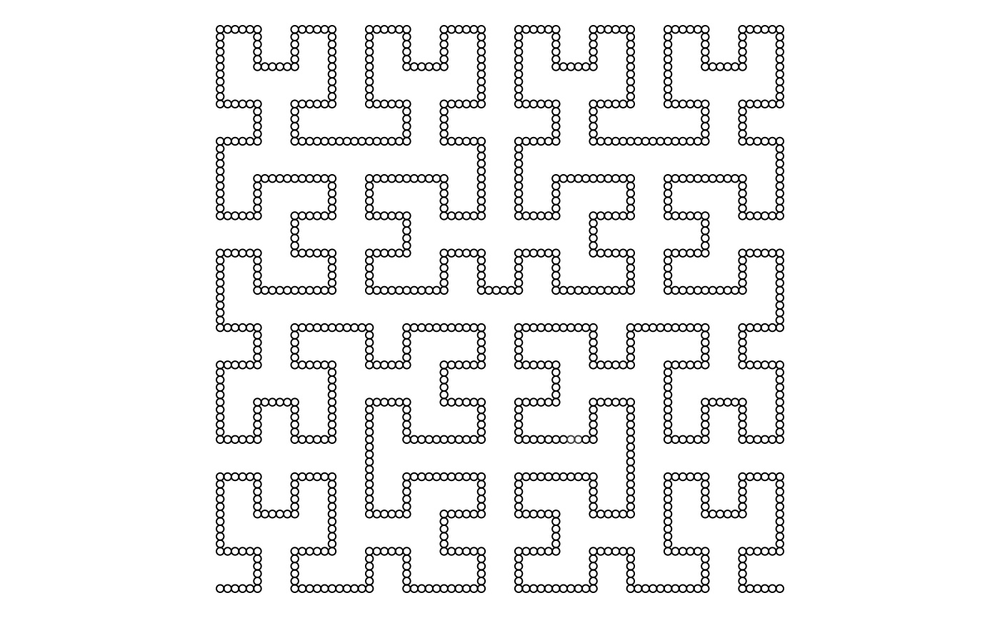
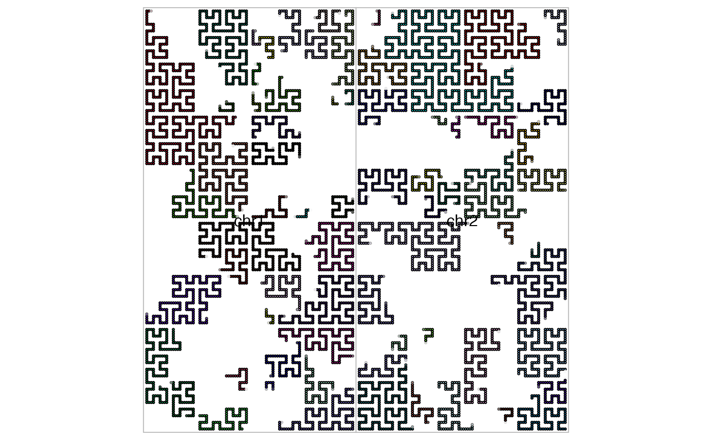
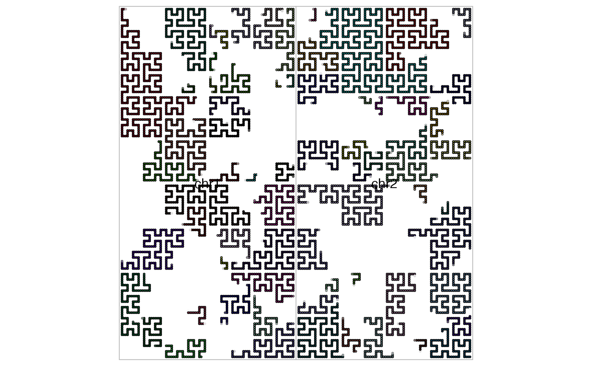

Initialize a Hilbert curve specifically for genomic data
GenomicHilbertCurve.RdInitialize a Hilbert curve specifically for genomic data
Arguments
- chr
a vector of chromosome names. Note it should have 'chr' prefix. This argument will be ignored when
backgroundis set.- species
abbreviation of species, e.g. 'hg19' or 'mm10'.
read.chromInfois used to retrieve the chromosome information.- background
the background can be provided as a
GRangesobject. Chromosomes should be unique across rows. Or more generally, the 'seqnames' should be different.- ...
common arguments in
HilbertCurvecan be used here.
Details
Multiple chromosomes can be visualized in a same Hilbert curve. All chromosomes are concatenated on after the other based on the order which is specified.
Since chromosomes will have irregular shapes on the curve, under 'pixel' mode,
users can set border option in hc_map,GenomicHilbertCurve-method to highlight
borders of chromosomes to identify their locations on the curve.
Value
A GenomicHilbertCurve-class object
Examples
require(circlize)
#> Loading required package: circlize
#> ========================================
#> circlize version 0.4.16
#> CRAN page: https://cran.r-project.org/package=circlize
#> Github page: https://github.com/jokergoo/circlize
#> Documentation: https://jokergoo.github.io/circlize_book/book/
#>
#> If you use it in published research, please cite:
#> Gu, Z. circlize implements and enhances circular visualization
#> in R. Bioinformatics 2014.
#>
#> This message can be suppressed by:
#> suppressPackageStartupMessages(library(circlize))
#> ========================================
require(GenomicRanges)
#> Loading required package: GenomicRanges
#> Loading required package: stats4
#> Loading required package: BiocGenerics
#>
#> Attaching package: ‘BiocGenerics’
#> The following objects are masked from ‘package:stats’:
#>
#> IQR, mad, sd, var, xtabs
#> The following objects are masked from ‘package:base’:
#>
#> Filter, Find, Map, Position, Reduce, anyDuplicated, aperm, append,
#> as.data.frame, basename, cbind, colnames, dirname, do.call,
#> duplicated, eval, evalq, get, grep, grepl, intersect, is.unsorted,
#> lapply, mapply, match, mget, order, paste, pmax, pmax.int, pmin,
#> pmin.int, rank, rbind, rownames, sapply, setdiff, sort, table,
#> tapply, union, unique, unsplit, which.max, which.min
#> Loading required package: S4Vectors
#>
#> Attaching package: ‘S4Vectors’
#> The following object is masked from ‘package:utils’:
#>
#> findMatches
#> The following objects are masked from ‘package:base’:
#>
#> I, expand.grid, unname
#> Loading required package: IRanges
#> Loading required package: GenomeInfoDb
bed = generateRandomBed()
gr = GRanges(seqnames = bed[[1]], ranges = IRanges(bed[[2]], bed[[3]]))
hc = GenomicHilbertCurve()
hc_points(hc, gr)

hc = GenomicHilbertCurve(chr = c("chr1", "chr2"))
hc_points(hc, gr)
 bg = GRanges(seqnames = c("chr1", "chr2"),
ranges = IRanges(c(1,10000000), c(10000000,20000000)))
hc = GenomicHilbertCurve(background = bg, level = 6)
hc_points(hc, gr, gp = gpar(fill = rand_color(length(gr))))
hc_map(hc, fill = NA, border = "grey", add = TRUE)

bg = GRanges(seqnames = c("chr1", "chr2"),
ranges = IRanges(c(1,10000000), c(10000000,20000000)))
hc = GenomicHilbertCurve(background = bg, level = 6)
hc_points(hc, gr, gp = gpar(fill = rand_color(length(gr))))
hc_map(hc, fill = NA, border = "grey", add = TRUE)
